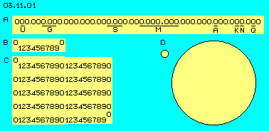
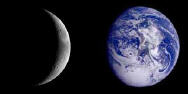
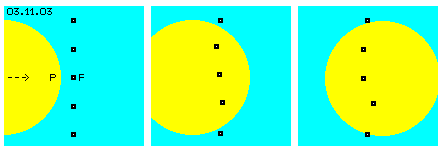
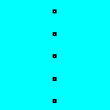
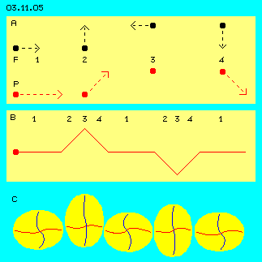
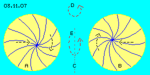
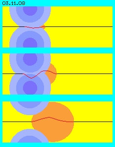
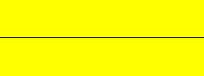

| Alfred Evert | 16.05.2004 |
03.11. Wandernde Potentialwirbel
Gähnende Leere
Als Ausgangspunkt wurde als ´menschliches Maß´ (M) ein Meter genommen. Mit unseren Händen hantieren wir meist ´handliche´ Körper von Dezimetern oder Zentimetern, bei Millimetern endet unsere natürliche Differenzierungsmöglichkeit. Mikrometer lassen sich nur noch mit technischem Gerät feststellen, Nanometer sind derzeit Grenze technischer Machbarkeit. Zehn Milliarden mal kleiner als unser Meter sollen Atome (A) sein, noch zehn Tausender mal kleiner sollen deren Kerne (K) sein, noch zehnmal kleiner Elementarteilchen (N, z.B. Nukleonen), diese zusammen gesetzt aus noch hundertmal kleineren Sub-Elementarteilchen (Q, Quarks).

Wenn wir unsere Meter-Schritte vorwärts lenken, schaffen wir leicht die zehn, hundert und tausend Meter. Die meisten verlieren die Lust am Gehen nach zehn Kilometern, nur ganz wenige wollen hundert Kilometer schaffen. Unsere eigenständig reale Erfahrung endet also schon bei Kilometern, darüber hinaus ´lassen wir uns bewegen´, z.B. per Auto oder Flieger.
Die Nullen-vor-dem-Komma stehen in dieser Skala lässig neben einander. Lässige fünf Nullen weiter geht es schon in Richtung Himmelskörper (S, Sterne), nochmals zwölf Nullen führen zu den Galaxien (G), nur noch vier/fünf Nullen weiter soll das Universum (U) enden. Jede Null mehr bedeutet, dass jeder Schritt bis hier her nicht nur einmal sondern zehnmal wiederholt werden muss (wie bei C beispielsweise veranschaulicht). Unsere praktische Erfahrung ist das eins-nach-dem-anderen, darum lesen wir diese Nullen gern im Sinne von Addition, obwohl dahinter jedes mal eine Multiplikation steht.
Nur für Addition haben wir ein ´sicheres´ Gefühl, bei Multiplizieren (oder Quadrieren) ´verschätzen´ wir uns meist. Bei D sind beispielsweise zwei Kreise dargestellt, der Radius des großen Kreises ist nur zehn mal länger als der des kleinen - aber hundertmal passt damit die kleine Fläche in die große. Wenn diese zusätzliche Null zugleich in drei Dimensionen gilt, bedeutet sie Faktor-1000 (oder wenn Universum und vorige ´Wolken´ als Kugeln betrachtet werden, noch immer drei Viertel davon, also Faktor-750).
Atome sind also Milliarden mal kleiner als unser Meter und was wir gewöhnlich als Materie bezeichnen, sind verschwindend winzige Teilchen in einem vergleichsweise riesigen Raum, bestehend aus Leere oder Nichts bzw. nichts Stofflichem, insgesamt also fast Nichts in fast unendlichem Nichts - nach gängiger Anschauung. Umgekehrt sind auch große materielle Körper fast nichts bzw. zumindest verschwindend wenig in der Leere des Alls, z.B. macht gewöhnliche Materie insgesamt keine fünf Prozent davon aus, der Rest soll dubiose ´dunkle Energie´ sein - nach gängiger Anschauung.
Fragliche Basis
Diese Größen des Alls sind abgeleitet von der auf der Erde wirkenden Schwerkraft - und es ist keinesfalls sicher, ob diese keinesfalls konstante sondern schwankende Größe in allen Weiten des Universums gleichermaßen auftreten sollte. Der andere Faktor der Berechnungen ist die Lichtgeschwindigkeit, wie sie auf der Erde zu messen ist bei ihrer (vermeintlich) linearen Ausbreitung - aber auch deren Geschwindigkeit ist niemals konstant, ist unterschiedlich in unterschiedlichen Medien, Licht wird gebrochen bzw. gebeugt. Zum dritten dient Rotverschiebung der Lichtfrequenzen als Begründung von Bewegungsrichtungen und/oder Entfernungen - aber diese Erscheinung könnte auch anderer Ursache sein.
Insgesamt ist also höchst problematisch (und bekannt, aber nicht permanent bekannt gemacht), ob man mit diesen wenigen und unsicheren Faktoren auf viele Dezimal-Stellen in den Makro-Kosmos hinaus extrapolieren darf. Umgekehrt scheinen die Größen des Mikro-Kosmos eindeutiger zu sein - wenn man die Unschärfe bei der Suche nach (vermeintlichen) Teilchen außer Acht lässt bzw. nicht nur noch rechnet ohne Rücksicht auf konkreten Bezug realer Erfahrungen (aber auch das ist bekannt und dennoch dominieren rein mathematische Erklärungsversuche das gängige Weltbild).
Minimales Schwingen
Es mag wiederum unvorstellbar für uns ´Grobstoffliche´ sein, dass minimale Bewegungsdifferenzen im Äther solch reale Bedeutung zukommen soll. Andererseits, wenn das Universum nicht aus lückenlosem Äther sondern aus Teilchen zusammen gesetzt wäre - wozu wären dann diese ´irre-großen´ Zwischenräume von Nichts erforderlich? Die Leere des Weltalls wird als Folge des Urknalls ´erklärt´, wobei diese seltsame Konsequenz allein aus obigen Hochrechnungen resultiert. Die Leere des Mikro-Kosmos lässt sich damit aber nicht erklären.
Nur wenn der Äther als stofflich und lückenloses Kontinuum betrachtet wird, der sich darum nicht in jeder beliebigen Weise bewegen kann, sind diese großen Entfernungsdifferenzen zwischen geringfügig abweichenden Bewegungsmustern zwingend erforderlich, im gigantisch Großen wie minimal Kleinen.

Ich möchte es Experten überlassen, welcher Größenordnung die Relationen von Bewegungskern und Gesamtumfang von Potentialwirbelwolken sind. Diese Frage ist ohnehin nicht eindeutig zu beantworten, weil keine scharfen Außengrenzen gegeben sind (wie vermeintlich bei festen Körpern). In jedem Fall werden die Differenzen zwischen den Wegen der Bewegungen und dem Durchmesser der Wolken für unser Verständnis ´astronomisch´ sein. Ein Beispiel kann vielleicht einen anschaulichen Eindruck vermitteln.
Entlang einer Strasse sind 320 Auto geparkt. Manche Besitzer suchen ihr Auto eine viertel Stunde lang - bis zum letzten Auto, anderthalb Kilometer entfernt. Diese Autos würden in ein Parkhaus-Würfel von 20 mal 20 mal 20 Meter passen (allerdings ohne Fahrbereiche). Im Zentrum dieses ´Riesen-Dings´ zittert etwas um 1 Millimeter hin und her - bei 10.000 Millimeter Abstand zu den Außenwänden. Das dürfte die minimale Relation von Bewegungskern zum Gesamtvolumen einer Lokalen Ätherbewegung sein. Damit mittig etwas um eine Volumeneinheit schwingen kann, wären (in einer Kugel) 6.000.000.000.000 Einheiten von ausgleichendem Mitschwingen tangiert.
Bei nur einer Null mehr passen 1000 mal mehr Autos in den gigantischen Würfel von 200 Metern Kantenlänge - monatelang könnten Autobesitzer darin ihr Auto suchen. In realen Potentialwirbeln dürften für die mittige Bewegung auch ein paar Nullen mehr Radius der Wolke erforderlich sein - kaum erkennbares, spezielles ´Zittern´ in gigantisch großen Ausgleichsbereichen bis hin zum allgemeinen Zittern außen herum.
Wandernde Wirbel
Innerhalb der Spiralarme (den gekrümmten Verbindungslinien) von Galaxien befindet sich Äther in weiträumig schwingenden Bewegungen. Innerhalb dieses im Raum wirbelnden Äthers driften Himmelskörper. Durch oben beschriebenen Druck schwimmen sie aber nicht nur einfach mit diesem Äther, sondern bewegen sich auch relativ zu diesem. Zuletzt rotiert z.B. die Erde auch um ihre Achse und z.B. Materie über oder auf ihrer Oberfläche führt wiederum relative Bewegungen dazu aus. Tatsächlich sind so alle Wirbelsysteme und auch ´materielle´ Körper in vielfach überlagerter Bewegung im Raum.

Die Vorwärtsbewegung der Wolke kam zustande aufgrund irgend einer Ursache (z.B. der Kollision von Galaxien, eine andere Ursache wird unten diskutiert). Das Äthervolumen der Wolke weist zusätzlich zu ihren internen Bewegungen damit kinetische Energie aus ihrer Vorwärtsbewegung auf. Es dringt damit aber keinesfalls eine ´Masse´ (schon gar nicht von scharf abgegrenzter, fester Kontur) durch den Freien Äther. Es wandert nur dieses Bewegungsmuster des komplexen Wirbelsystems durch den Äther.
Obigen drei Bilder sind Teil der nebenstehenden Animation, welche den Bewegungsablauf verdeutlichen kann. Die fünf ausgewählten Punkte Freien Äthers nehmen das Bewegungsmuster der jeweiligen Verbindungslinien des Potentialwirbels an, während dieser durch ihren lokalen Ort wandert. Nur phasenweise übernehmen diese Punkte also den ´Tanz´ innerhalb dieser Wolke.

In dieser Potentialwirbelwolke sind keine Verbindungslinien markiert. Es macht auch keinen Unterschied, in welche Richtung der Potentialwirbel wandert, ob mit einem Pol voraus oder diagonal oder in seiner äquatorialen Ebene oder auch in rotierender oder taumelnder Bewegung. In jedem Fall finden die internen Bewegungen in sich synchron statt in allen Richtungen zugleich. Und in jedem Fall bewegt sich der Äther außen an den Grenzbereichen der Wolke wie Freier Äther.
Nur die Struktur wandert
Alle Erscheinungen sind nur bestimmte Bewegungsmuster innerhalb des ansonsten uniformen Äthers. Äther ist überall relativ ´ortsfest´, Freier Äther bewegt sich nur innerhalb des Bereichs seiner universellen Bewegung, Gebundener Äther in großen Wirbelsystemen bewegen sich weitläufiger (aber dennoch nur begrenzt) z.B. innerhalb der Schwingungsbereiche ihrer Verbindungslinien, eingebettet in dieses Wandern bewegen sich alle kleineren Potentialwirbel - aber eben nur in der Form, dass nur vorübergehend der lokal jeweils betroffene Ätherpunkt sich als Bestandteil einer etwas anderen Bewegung verhält.
Für ´Grobstoffliche´ ist es schwierig, Abschied von der Vorstellung fester Teilchen und Körper zu nehmen. Im ´normalen´ Verständnis bewegt sich immer eine Sache relativ zu anderen Sachen, selbst in einem Fluss ist z.B. materielles Wasser in Vorwärtsbewegung. Auf Ebene des Äthers - und aus nichts anderem bestehen letztlich Materie und materielle Körper - bewegt sich nicht eine Sache vorwärts, auch keine Portion Äthervolumens, sondern nur ein bestimmtes Bewegungsmuster wandert vorwärts, nichts sonst, nichts mehr, nichts weniger.
Es ist schwierig ein stimmiges Beispiel aus der materiellen Welt zu finden, am ehesten dienlich für korrekte Vorstellung ist ein Wirbel im Bach. Das Wasser fließt in einem Bach abwärts und alle Wasserteile führen an einer bestimmten Stelle eine gleichartige Wirbelbewegung aus (z.B. ausgelöst durch einen Stein). Dieses Wirbelmuster steht ortsfest, das Wasser fließt durch den Wirbel hindurch während seiner generellen Abwärtsbewegung.
Genauso bewegen sich Ätherwirbel vorwärts im ruhenden Äther - nur aus umgekehrter Sicht. Von einem im Bach mitreisenden Beobachter (bzw. Wasserteilchen) aus gesehen, kommt der Beobachter von oben auf diesen Wirbel zu, führt seine tanzende Bewegungen einen Augenblick lang aus, danach verschwindet dieser Wirbel - vom Beobachter aus gesehen - bachaufwärts.
Auch ein vorwärts stürmender kleiner Wirbelwind (bei ansonsten nahezu Windstille) könnte als anschauliches Beispiel dienen. Für einen ortfesten Beobachter (bzw. Punkt Freien Äthers) ist die Erscheinung analog zu voriger: er sieht einen Luftwirbel auf sich zukommen, führt einen Augenblick lang dessen Bewegungsmuster anteilig mit aus, wonach der Wirbelwind weiter auf seiner Bahn vorwärts stürmt. Nach einiger Zeit ist alles wieder relativ ruhig, wie zuvor.
Trägheit
Aus gängiger Sicht der materiellen Erscheinungen ist es klar: die der Masse innewohnende Trägheit hält Geschwindigkeit und Richtung eines bewegten Körpers konstant. Es ist klar, dass ein in Bewegung befindliches Teilchen durch das Nichts davor weiterhin sich konstant bewegen kann (oder beispielsweise im Medium Luft nur entsprechend geringe Reibung erfährt). Es ist auch klar, dass man zum Abstoppen der Vorwärtsbewegung eines Teilchens eine Kraft aufbringen muss, welche dem ursprünglichen Impuls bzw. der kinetischen Energie entspricht.
Nicht so klar ist allerdings, warum sich ein Teilchen einer Ablenkung der Bewegungsrichtung ebenso vehement widersetzt, obwohl dabei die Geschwindigkeit nicht reduziert wird und seitwärts davon Nichts ist was sich dieser Richtungsänderung widersetzen könnte (außer z.B. obige Luft). Warum sollten beispielsweise für die fortgesetzte ´Beschleunigung´ einer Masse in eine Kreisbahn hinein enorme Zentripetalkräfte erforderlich sein?
Mit dem ausweichenden Begriff von ´der-Masse-innewohnender-Trägheit´ wird das nicht wirklich einsichtig erklärt. Bei der Betrachtung der zugrunde liegenden Ätherbewegungen wird der wirkliche Grund für die Konstanz von Geschwindigkeit und Richtung leicht erklärbar. Aus Sicht der materiellen Welt und ihrer Teilchen ist absolut verlustfreie Trägheit nur theoretisch möglich bzw. sind real immer Reibungsverluste gegeben. Nur wenn Äther als reales Kontinuum betrachtet wird, ist Energie-Konstanz nicht nur theoretisch sondern auch real gegeben.
Vorwärts ruckeln
Wenn diese Wolke nun zusätzlich in Vorwärtsbewegung ist, haben alle internen Bewegungen einen Impuls in dieser Richtung zusätzlich aufgeprägt. An der Vorderseite der Wolke ergibt sich damit phasenweise erhöhter Widerstand des Freien Äthers. Dadurch müssen im lückenlosen Äther die internen Bewegungen intensiver werden.
Wenn also die Wolke phasenweise in ihrer Vorwärtsbewegung etwas abgebremst wird, werden Verbindungslinien etwas gestaucht und müssen weiter bzw. rascher rechtwinklig dazu Ausweichbewegungen ausführen, bis hin zur hinteren Seite der Wolke. Wenn nun in nächster Phase momentan gleichsinnige Bewegungen anstehen, können diese ´Spannungen´ sich in entsprechend vehementeren Vorwärtsbewegungen entladen.
Insgesamt wird also die Wolke eine etwas mehr pulsierende interne Bewegung ausführen, sogar ihre Kugelform könnte damit pulsierend gestaucht und gestreckt werden. Insgesamt fliegt damit eine Potentialwirbelwolke nicht wie ein Geschoss mit konstanter Geschwindigkeit durch den Raum, sondern zuckelt ruckartig vorwärts durch den Äther.
Auch in der klassischen Physik wird unterstellt, dass Vorwärtsbewegung einer Kugel in einem idealen Gas theoretisch reibungsfrei sein müsse. Der an der Vorderseite entstehende erhöhte Druck breitet sich augenblicklich und gleichförmig aus, also wird die Kugel an ihrer Rückseite gleichem erhöhten Druck ausgesetzt, wird also in gleichem Maße von hinten geschoben wie von vorn gebremst. Allerdings sind in realen Gasen bzw. teilchenhaften Medien unausweichlich Streuverluste gegeben.
Nur wenn Äther als lückenloses Medium angesehen wird, ist Konstanz der kinetischen Energie auch real gegeben. Man könnte sich nun vorstellen, dass die Potentialwirbelwolke vorn in analoger Weise Äther zur Seite drückt und dieses ´Zuviel´ an Äther nur nach hinten, hinter die Potentialwirbelwolke ausweichen könnte. Diese weite Umweg-Bewegungen wird es aber nicht geben, weil damit ein Verschieben von Material an Grenzflächen erforderlich wäre. Der Vergleich mit Ballistik (so wie Photonen-Teilchen praktisch immer gesehen werden) ist also abwegig und ebenso wenig ist Äther nicht mit idealem Gas zu vergleichen.
Die verlustfreie Konstanz kinetischer Energie ist vielmehr nur durch phasenweise ´Zwischenspeicherung´ von Vorwärtsbewegung in Form intensiverer interner Schwingbewegungen zwangsweise gegeben. Je nach momentanen äußeren Verhältnissen hinsichtlich gleich- oder gegensinniger Bewegungen erfolgt dieses pulsierende Vorwärts-Stoßen, abwechselnd mit pulsierendem Aufschaukeln interner Schwingungen rechtwinklig dazu.
Darum ist (zunächst) auch gleichgültig, mit welcher Seite voran die Potentialwirbelwolke durch ruhenden Äther wandert: es werden immer die Verbindungslinien in Fahrtrichtung gestaucht/gestreckt und quer dazu pulsieren die ausgleichenden Schwingungen mit pulsierenden Amplituden. Allerdings hat diese Art Vorwärts-Wackeln auch ihre Grenzen.
Geschwindigkeiten
Die Erde wandert durch das All, aber wir haben davon keinen direkten Eindruck, die Jahreszeiten z.B. sind nur sekundäre Erscheinungen. Die Rotation der Erde um ihre Achse erfahren wir konkret durch Tag und Nacht, wir haben aber keinen direkten Eindruck von der Geschwindigkeit dieser Bewegung. Binnen 24 Stunden legt ein Punkt beim Äquator rd. 40.000 km zurück, das ist etwa doppelte Schallgeschwindigkeit. Weiter oben am Globus, z.B. in Europa, rasen wir etwa mit Schallgeschwindigkeit im Kreis herum, also mit rd. 300 m/s - und spüren davon nichts.
Licht ist unvorstellbar schnell, wir können nur theoretisch zur Kenntnis nehmen, dass es binnen einer Sekunde z.B. sieben mal um den Erdball jagt, rund 300.000 km/s schnell ist. Es überschreitet unsere konkrete Vorstellungsmöglichkeiten, dass die Lichtgeschwindigkeit mit ihren rd. 300.000.000 m/s eine Million mal schneller ist als der für unsere Verhältnisse sehr schnelle Schall.
Wenn wir also einen materiellen Körper vorwärts bewegen oder selbst mit Schallgeschwindigkeit mit der Erde rotieren, erfolgt das Wandern dieser Ansammlungen von Potentialwirbelwölkchen mit nahezu unbedeutend kleinen Geschwindigkeiten im Vergleich zur Lichtgeschwindigkeit - und damit in Relation zur Bewegungsgeschwindigkeit des ´ruhenden´ Freien Äthers auf seinen Spiralknäuelbahnen.
Lichtgeschwindigkeit
Die Lichtgeschwindigkeit kann nicht aufgrund irgend einer nur abstrakten Begrenzung limitiert sein, diese Begrenzung muss konkrete Ursache haben, die im Medium seiner Fortbewegung begründet sein muss. Licht kann sich nicht im ´Vakuum´ fortpflanzen, Licht muss eine besondere Art von Ätherbewegung sein. Andersartige Bewegungen sind immer lokal begrenzt, also Potentialwirbelwolken, die selbstverständlich durch den ´ruhenden´ Äther wandern können (als einzelne Wolke oder wiederholt gleichartige Wolken, ebenso wie ganze Ansammlung von Potentialwirbeln, z.B. die der Erde insgesamt). Ein ´Photon´ kann also kein Teilchen noch eine Welle sein, ist vielmehr eine relativ kleine Potentialwirbelwolke (weil ein Photon nahezu keine oder gar keine ´Masse´ besitzt).
Wenn Licht so schnell ist, kann es nicht irgendwie durch den Raum trudeln (wie oben dargestellt, egal mit welcher Seite voraus), sondern muss bestmöglich auf das Bewegungsmuster Freien Äthers abgestimmt sein. Die Wolke muss mit einem Pol voraus durch den Freien Äther wandern, weil die taumelnde Achse die unproblematischere Bewegung ist (im Vergleich zur schlingernden Scheibe quer dazu). Aber auch diese kleine Potentialwirbelwolke weist phasenweise gleichsinnige oder gegensinnige Bewegungen gegenüber Freiem Äther auf.

Darunter ist ein ´Photon´ (P) als roter Punkt markiert, das einen Impuls für eine generelle Bewegung nach rechts erhalten hat (dessen Ursache unten ausgeführt wird). Die Geschwindigkeit der Vorwärts-Bewegung wird gleich der des Punktes Freien Äthers unterstellt.
In Phasen gleichgerichteter Bewegung (1) käme damit das Photon weit voran. Wenn Freier Äther sich zur Seite bewegt (Phasen 2 und 4), driftet das Photon auch in diese Richtung und kommt entsprechend seiner eigenen Geschwindigkeit voran. Wenn die Bewegungen gegenläufig sind (3), kommt das Photon gar nicht voran.
In diesem Bild bei B ist der Weg eines Photons nach dieser pauschalen Betrachtungsweise schematisch skizziert. Danach würde das Photon in unterschiedlichen Sprüngen vorwärts kommen, auch zur Seite hin und her gerüttelt werden, zwischendrin auch gar nicht voran kommen. Real wird die Bahn nicht so schematisch verlaufen (weil die Spiralknäuelbahnen nicht so symmetrisch angelegt sind), die reale Bahn eines Photons könnte fastgar chaotisch erscheinen.
Allerdings wird nicht das ganze Photon derart hin und her geschüttelt erscheinen, diese Wolke eher wie eine Amöbe voran kommen. Wenn die Bewegung vorn momentan etwas abgebremst wird, werden die Ausgleichsbewegung verstärkt in Richtung des momentan kleinsten Widerstands auftreten. Die prinzipielle Kugelform der Wolke wird in rundliche Formen übergehen, durchaus auch asymmetrisch zur Längsachse.
In diesem Bild bei C sind solche Formveränderungen einer Wolke auf ihrem Weg von links nach rechts schematisch dargestellt. In der Animation sind ebenso dieses Vorwärts-Springen, Verharren und laufende Formveränderungen visualisiert. Diese Animation ist nur eine grobe Darstellung, reale Bewegungsabläufe könnten aber durchaus entsprechend sein (selbstverständlich aber mit gleitenden Übergängen der Formen wie Geschwindigkeiten).
Elektromagnetische Wellen
Photonen sind also keine Teilchen und Elektromagnetismus basiert auch nicht auf klassischen Wellen, es kann real auch kein Teilchen-Wellen-Dualismus existieren (außer als Worthülse). Bei einer ´elektromagnetische Welle´ wandert vielmehr das Bewegungsmuster einer Potentialwirbelwolke durch (relativ ruhenden) Äther.
Der linksdrehende Pol ist nach vorn gerichtet. Die in Längsachse taumelnde Bewegung bringt den Äther vorn in zunehmend größere Schwingung (das allgemein als ´elektrisches´ Moment genannt wird). Wenn der Freie Äther von der äquatorialen Ebene der Wolke durchlaufen wird, sind die größeren Ausgleichsbewegungen der radialen Verbindungslinien dort gegeben, d.h. Schwingen quer zur Längsrichtung mitsamt der Erscheinung einer umlaufenden Welle (was allgemein als ´magnetisches´ Moment bezeichnet wird). Danach kehrt zusammen mit der weniger ausladenden Taumelbewegung (zum hinteren Pol hin) die Bewegung Freien Äthers auf seine normalen Spiralknäuelbahnen zurück.
Dieser Prozess ist aber nicht kontinuierlich verlaufend. Wenn vorn Phasen gegenläufiger Bewegungen anstehen, wird der Wirbel in Längsrichtung gestaucht. Die zwingend damit verbundenen Ausgleichsbewegungen quer dazu erfolgen nicht symmetrisch mit gleicher Intensität, sondern weichen zeitweilig in Richtung kleinsten Widerstands aus. Der Widerstand rund um den Äquator ist generell am stärksten. Sobald also nach vorn wieder eine Phase geringeren Widerstands vorliegt, wird die verformte Wolke mit ihrer Spitze wieder nach vorn gedrückt. Daraus resultiert das insgesamt ruckartige Vorwärts-Springen elektromagnetischer Wellen wie deren keinesfalls gleichförmige Ausschläge quer zur Längsrichtung.
Geboren aus Stress 
Wenn die Kollision aber mit großer Geschwindigkeit sehr heftig erfolgt und wenn sogar beide Wolken generell gegenläufig sind (durch bogenförmige Pfeile markiert), kommt es zu ´Stress´ auch im Freien Äther dazwischen. In diesem Bild müsste sich Äther links abwärts und direkt rechts daneben aufwärts bewegen. Es droht die ´Gefahr´ einer Grenzfläche (C, grau gestrichelte Linie), entlang der sich Ätherpunkte relativ zueinander verschieben müssten.
Freier Äther schwingt auf seinen Spiralknäuelbahnen, hier schematisch nur als Kreisbahn skizziert (D). Voriges Verschieben kann im lückenlosen Äther nicht auftreten, die ´Spannung´ kann nur gelöst werden, indem der Freie Äther seine kleinräumige Bewegung streckt (links weiter abwärts) und zwar in beiden Richtungen (kurz danach also rechts weiter aufwärts). Anstelle voriger Kreisbahn ergibt sich damit eine elliptische Bahn (E).
Der Übergang von voriger Kreisbahn in diese längere elliptische Bahn kann nicht sprunghaft geschehen, sondern nur in Form einer sich ausweitenden Spirale. Zudem kann diese Bewegung nicht nur in einer Ebene statt finden, sondern muss zugleich auch senkrecht dazu statt finden. Es wird sich also eine spiralige Bahn kegelförmig ergeben, hier mit der Spitze aus der Bildebene heraus - die taumelnde Bewegung um die Längsachse am vorderen Pol.

Passgenau
Wenn wir ´Grobstoffliche´ diese blaue Objekte aufeinander zu rasen sehen, erwarten wir unwillkürlich, dass nun ´die Fetzen fliegen´ mit zerstörerischer Gewalt. Vollkommen anders ist die Situation im Äther. Es ´spritzt´ dabei keine materielle Substanz auseinander, durch den (ruhenden) Äther fliegt nur ein neues Bewegungsmuster davon - von perfekter Gestalt, z.B. ein Photon.
Dieses Photon wird nur geboren aus entsprechender Stress-Situation (wenn die internen Schwingungen die Kollision nicht allein abfedern können). Der Äther muss dabei mit seiner maximalen Geschwindigkeit hinsichtlich Veränderung von Bewegungsmustern reagieren: aus Universeller Bewegung die gesamte Struktur einer Potentialwirbelwolke inklusive aller Ausgleichsbewegungen aufbauen (und wieder zu seiner originären Bewegung zurück kehren). Dieser Bewegungs-Umbau kann nur erfolgen, wenn beide Kollisionspartner die geeigneten Bewegungsanstöße einbringen (es kann nicht Etwas unmittelbar aus Nichts entstehen, wie z.B. ´virtuelle Teilchen´ gängiger Anschauung).

Insofern passt das Bewegungsmuster der sich vorwärts bewegenden Potentialwirbelwolke perfekt in das Bewegungsmuster ruhenden Äthers. Dies bedeutet aber zugleich und unausweichlich, dass Geschwindigkeit und Richtung dieser Wolke nicht total konstant sein kann. Es gibt praktisch nirgendwo Freien Äther reiner Form, überall ist er überlagert von anderen Mustern. Damit ist z.B. der Widerstand vorn an der Wolke nicht vollkommen symmetrisch, d.h. das Licht wird gebeugt.
Selbstverständlich kann Licht verlangsamt werden (wenn es sich gegen eine nicht-symmetrische Überlagerung vorwärts bewegt), also den Eindruck z.B. von Rotverschiebung ergeben. Beispielsweise ist die Bewegung Freien Äthers innerhalb von Glas oder Wasser etwas anders verformt, also kommt Licht darin nur langsamer voran. Der Potentialwirbel als solcher bleibt erhalten, nur seine Vorwärtsbewegung wird durch unterschiedliche Widerstände etwas behindert. Das Photon kann danach z.B. in Luft wieder schneller voran kommen.
Elektromagnetische Wellen stellen also ein perfektes Zusammenspiel zwischen ruhendem Äther und vorwärts eilenden Potentialwirbelwolken dar - wobei allerdings Geschwindigkeit und Richtung der Vorwärts-Bewegung vollkommen abhängig ist vom ´Ruhezustand´ des durchlaufenen Äthers. Insofern kann es keine Konstanz der Lichtgeschwindigkeit noch Geradlinigkeit seiner Ausbreitung geben (aber damit weitreichende Konsequenzen hinsichtlich gängiger Vorstellungen).
Grobstoffliche Wirbel
Erst auf dieser Ebene beginnt die ´materielle Welt´ und gelten deren Gesetzmäßigkeiten und Eigenschaften, z.B. unterschiedlicher Dichte und Wärme. Materie ist aus zahllosen kleinen Potentialwirbelwolken zusammen gesetzt, sie selbst aber ist kein Potentialwirbel (z.B. rotiert die Erde als starrer Wirbel). Jedes Wölkchen dieser Ansammlung hat seinen Ausgleichsbereich, grenzt also an Freien Äther problemlos an. Auch die Erde ist umgeben von einem Ausgleichsbereich, in welchem z.B. die Erscheinungen der Erd-Gravitation und des Erd-Magnetismus auftreten.
In vorigen Kapiteln wurde dargestellt, dass es in den äußeren Grenzbereichen von Potentialwirbeln einen fließenden Übergang gibt (von universeller Bewegungsform hin zu groberen, gestreckteren Bewegungsmustern). In diesen Grenzbereichen gibt es auch diesen Druck Freien Äthers, praktisch sein phasenweiser Widerstand aus momentan gegenläufigen Bewegungen.
Auch im Umfeld der Ansammlungen von Potentialwirbeln gibt es schon diesen stufenweisen Übergang und auch vorigen Druck. Daraus resultiert die Erscheinung, welche als Anziehungskraft beschrieben wird bzw. Gravitation genannt wird. Anziehungskräfte kann es überhaupt nicht geben, in keinerlei Medium (außer rein abstrakt in fiktiven Medien). Der relative Druck (den man Gravitation nennen kann), ist nur in der ´Aura´ von Himmelskörpern gegeben, nur in einem schmalen Grenzbereich des Übergangs um materielle Ansammlungen (nicht wie bei den theoretisch grenzenlosen Ausgleichsbereichen von Potentialwirbeln). Gravitation ist also eine lokal begrenzte Erscheinung, zwar überall um Himmelskörper herum gegeben, aber nicht wirksam durch die Weiten des Alls, nicht einmal zwischen Sonne und Planeten.
Bei der Rotation der Erde um ihre Achse bewegt sich keine ´Materie´ im Raum. Nur das Muster jedes einzelnen Potentialwirbels (die Ansammlungen fester, flüssiger, ´toter´ oder lebendiger Erscheinungen) bewegt sich in relativ ruhendem Äther vorwärts bzw. im Kreis herum. Der Äther selbst ist davon (nahezu) unberührt. Im Innern der Erde ist dieser Freie Äther zwischen den dicht versammelten Wölkchen natürlich nicht mehr ganz ´jungfräulich´.
Vom außen betrachtet wird in den Grenzbereichen zur irdischen Materie der Freie Äther immer in gleiche Richtung ´gebürstet´ durch die Erdrotation. Der dortige Äther wird dadurch nicht weiträumig bewegt, aber der ´Wind´ vorüberziehender Bewegungswirbel führt doch zu kleinen, schwingenden Wirbeln parallel zur Erdachse. Diese reichen nicht weit hinein in die Erde und sie reichen hinaus - soweit Erdmagnetismus nachweisbar ist.
Strahlungen der Sonne verformen das ´Feld´ des Erdmagnetismus und umgekehrt wird ´harte´ Strahlung durch dieses Feld beeinflusst. Die kleinen Schwingungen des Erdmagnetismus überlagern natürlich die Bewegungsform des Äthers in der ´Aura´ der Erde, selbstverständlich verformt auch vorige ´Gravitation´ den Äther dieses Bereichs. Licht bewegt sich darum in der Nähe von Himmelskörpern anders als draußen im All. Licht wird schon an jede scharfen Kante gebeugt - aber nicht aufgrund der Relativitäts-Theorie (und abstrakter Formeln), sondern aufgrund ganz realer Bewegungen höchst unterschiedlicher Art (die nicht durch eine einfache ´Weltformel´ zu beschreiben sind).
Detaillierung
Zum Schluss wurden hier beispielsweise die Wanderung und Rotation materieller Körper angesprochen, die nurmehr sekundäre Erscheinungen von Ätherbewegungen sind. Auch diese Themen ´klassischer´ Physik der ´materiellen Welt´ erfordern weitere Detaillierung in separaten Abschnitten.
Dennoch mag mancher Leser schon jetzt genügend Anregung erfahren haben, eigene Vorstellungen zu seinem Sachgebiet auf Basis des realen Äther-Kontinuums und seiner zwangsläufig daraus resultierenden Bewegungen und Erscheinungen anzustellen.
Die Bewegungsabläufe des Äthers im Äther mögen vielen Lesern unglaublich erscheinen, obwohl wir Bewegungen ähnlicher Form ganz real z.B. in Flüssigkeiten oder Gasen beobachten können. Tatsächlich unvorstellbar, d.h. außerhalb unserer konkreten Erfahrungswelt, sind aber die Größenordnungen des Makro- wie des Mikro-Kosmos. In Bild 03.11.01 bei A sind ´Nullen´ auf der Entfernungs-Skala schematisch dargestellt.
Kein Mensch kann eine konkrete Vorstellung entwickeln zu diesen minimal-kleinen oder riesig-großen Entfernungen bzw. Räumen. Von daher ist es fast egal, wie viele Stellen vor oder nach dem Komma jeweils welche Erscheinung haben soll - es sind immer unvorstellbare, astronomische Relationen.
In den schematischen Zeichnungen der Potentialwirbelwolken in vorigen Kapiteln wurde die mittige Schwingung extrem weiträumig dargestellt in Relation zum Umfang der ganzen Wolke. So kann dieses Schwingen nicht statt finden. Bei Galaxien oder Sonnensystemen oder Atomen befinden sich zwischen Kern und Gesamtumfang immer viele Nullen. Mindestens zehntausendfach, eher millionen- bis milliardenfach größer ist also der Radius zwischen Bewegungskern und äußerer ´Grenze´ dieser Potentialwirbelwolken.
In den ersten Kapiteln zur Lokalen Ätherbewegung wurde das Bewegungsprinzip der Potentialwirbel zunächst immer anhand ´ortsfester´ Wolken dargestellt. Erst im vorigen Kapitel kam nun der Gesichtspunkt hinzu, dass diese Wirbelsysteme durch den Äther wandern, z.B. Galaxien wie auch Atome oder einzelne Elektronen im Raum eine Vorwärts-Bewegung ausführen. Nur noch der Raum außerhalb der Galaxien könnte damit als ´ruhender´ Freier Äther bezeichnet werden.
Diese Vorstellung ist für ´Grobstoffliche´ wiederum nur ´widerwillig´ zu akzeptieren: es bewegen sich niemals feste Körper durch den Raum mit ihrer körperlichen Masse, sondern ´nur´ die Struktur eines Ätherwirbels wandert durch den Raum bzw. nicht durch den abstrakten ´Raum´, sondern ganz konkret durch den relativ zum Wirbel ruhenden Äther.
Es steht nun natürlich die Frage im Raum, warum eine Potentialwirbelwolke sich fortgesetzt durch Äther vorwärts ´drücken´ könnte. Sie muss dabei dem ruhenden Äther kurzfristig ihr Bewegungsmuster aufprägen - und danach soll alles wieder wie zuvor sein, der Wirbel ungebremst weiter reisen und der ruhende Äther wieder ruhend sein.
In vorigen Kapiteln wurde schon bei ortsfesten Potentialwirbelwolken festgestellt, dass Gebundener Äther in seinen äußeren Grenzbereichen sich im ´Widerstreit´ mit Freiem Äther befindet. Der Freie Äther widersetzt sich dort momentan gegensinnigen Bewegungen der Verbindungslinien und übt damit zentripetalen Druck aus. Dieser führt zu intensiveren Ausweichbewegungen im Innern der Potentialwirbel, wird kompensiert in Phasen momentan gleichsinniger Bewegungen und führt bei ausreichender Resonanz zu stabilen Potentialwirbelwolken. Durch den allseitigen Druck werden diese im Prinzip kugelförmig sein, allerdings mit rundum differenzierten Bewegungen.
Entfernungen im Mikro- und Makro-Kosmos sind extrem unterschiedlich und ebenso differenziert sind die darin auftretenden Geschwindigkeiten. Unsere ´natürliche´ Geschwindigkeit sind wenige km/h oder m/s, von der Schallgeschwindigkeit mit ihren rd. 300 m/s haben wir konkreten Eindruck, wir bauen aber auch Maschinen mit noch höheren Geschwindigkeiten.
Das All ist so groß, dass die Entfernungen in Lichtjahren angegeben werden, also 300.000.000 m/s mal den mehr als 30.000.000 Sekunden eines Jahres, also rd. 10.000.000.000.000.000 m ist diese Einheit lang - und das Universum soll wiederum Millionen solcher Einheiten groß sein. Licht ist für unsere Verhältnisse unvorstellbar schnell, aber es ist dennoch nicht einsichtig, warum Bewegung auf einen bestimmten Wert derart limitiert sein soll, dass seine Reise durch das All so lang dauern muss.
In Bild 03.11.05 sind verschiedene Phasen rein schematisch dargestellt. Bei A ist oben ein Punkt Freien Äthers (F, schwarz) eingezeichnet, wobei die Pfeile seine momentane Richtung (1 bis 4) anzeigen. Anstelle seiner komplexen Spiralknäuelbahn wird hier vereinfachend unterstellt, dass er sich im Prinzip nur nach rechts, dann nach oben, nach links und wieder nach unten bewegt.
Bei ´elektromagnetischen Wellen´ ist durchaus die Erscheinung bekannt, dass vorn ein elektrisches Feld kurzfristig in Erscheinung tritt (hier das Vorwärts-Springen der taumelnden Bewegung um die Längsachse), danach seitlich davon ein magnetisches Feld auftaucht (hier die intensivere Schwingung in äquatorialer Ebene, also quer zur Längsachse, und seitlich verlagert entsprechend aktueller Bewegung Freien Äthers). Das elektrische Feld wie das magnetische Feld verschwinden ebenso periodisch und tauchen weiter vorn und/oder seitlich davon wieder auf.
In Bild 03.11.08 sind drei Phasen der folgenden Animation dargestellt, welche diesen Vorgang nochmals verdeutlichen. Die beiden Kollisionspartner (blau) bewegen sich hier vertikal aufeinander zu und ihre äußeren Bereiche tauchen ineinander ein. Rechtwinklig dazu wird ein Photon (rot) heraus gestoßen. Durch die horizontale Verbindungslinie (schwarz) sind Punkte Freien Äthers markiert, welche zeitweilig zur taumelnden Längsachse des Photons werden. Diese Bilder sind wiederum stark überzeichnet und können den Vorgang nur schematisch wiedergeben.
Diese Gesetzmäßigkeiten treten nur auf, wenn Äther als lückenloses Kontinuum betrachtet wird. Lokale Bewegungen im Äther sind nur nach den Prinzipien der Potentialwirbelwolken möglich. Die Muster von Potentialwirbelwolken können durch den Freien Äther wandern, entweder mit Lichtgeschwindigkeit (wenn sie exakt resonant sind mit Freiem Äther) oder mit beliebig geringerer Geschwindigkeit (wie beispielsweise ein freies Elektron bzw. wie in obigem Bild 03.11.03 prinzipiell dargestellt). Selbstverständlich können auch Zusammenballungen von Potentialwirbelwolken (z.B. Atome) oder deren Ansammlungen (z.B. die Erde) durch Freien Äther wandern oder in diesem ´herum-taumeln´.
Oben angeführten Bewegungen von wandernden Potentialwirbelwolken konnten hier nur beispielhaft die generellen Prinzipien beschreiben. Jede dieser (und weiterer) Erscheinungen muss in neuen Teilen und vielen Kapiteln dieser Ausarbeitung detailliert beschrieben werden.
Äther-Physik und -Philosophie